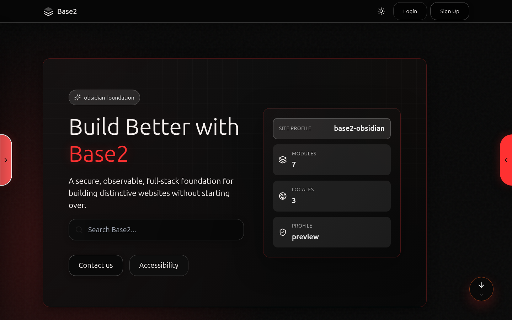
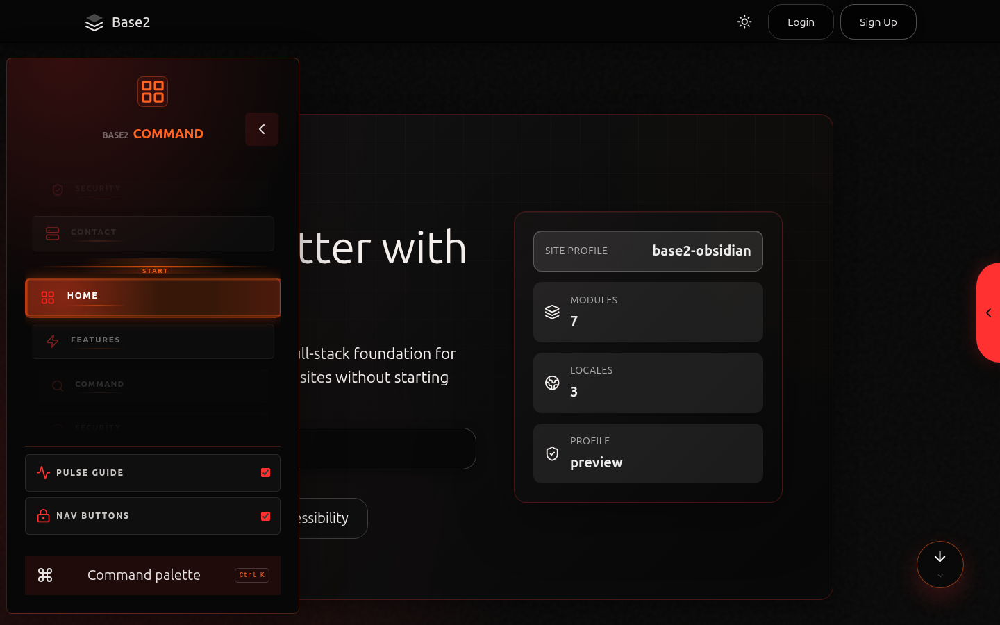
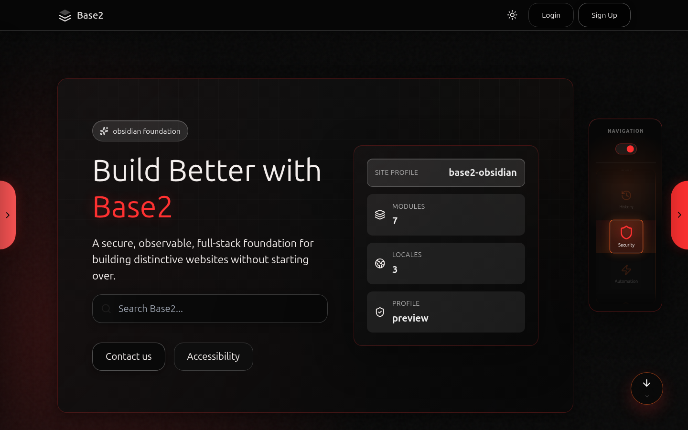
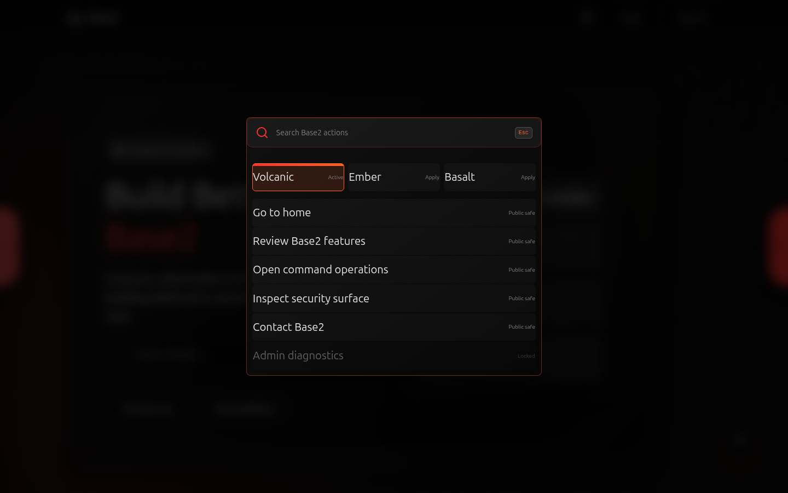
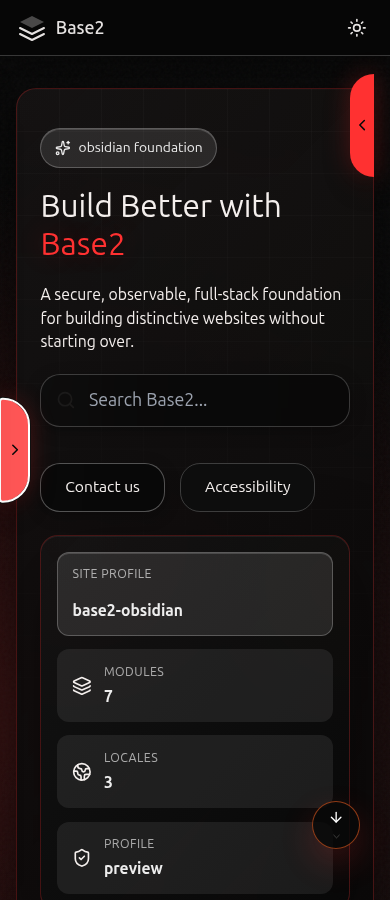
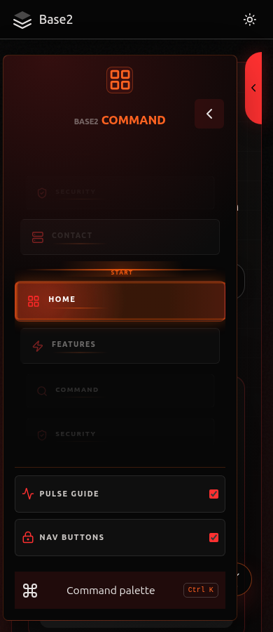
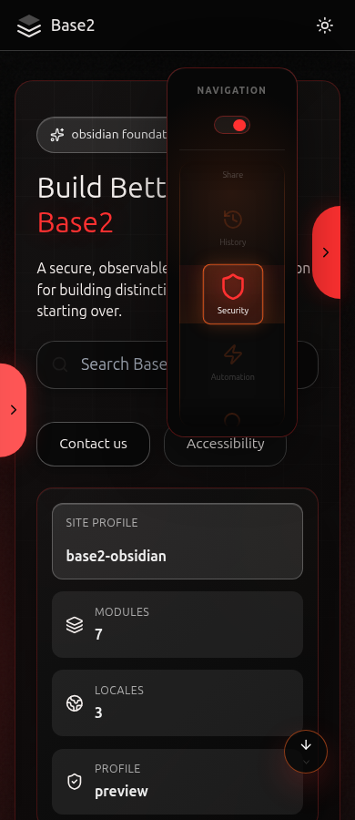
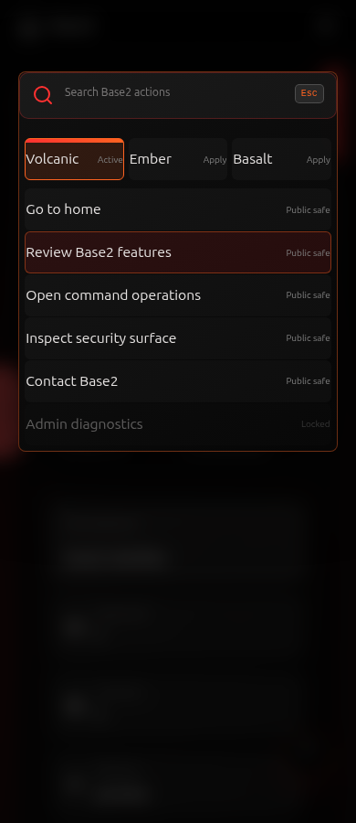

Original Obsidian / Volcano reference
Recovered before editing. The local restoration passes comparison against these eight images. Owner confirmation is pending; this is not a new proposed design.
Preserved: red edge tabs, glowing command menu, icon utility menu, dark gradient, header, movement buttons and modal palette. Other pages remain pending reference confirmation.
Desktop — 1440px
Home
Left command menu
Right utility menu
Command palette
Mobile — 390px
Home
Left command menu
Right utility menu
Command palette